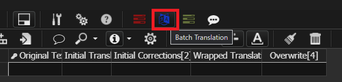
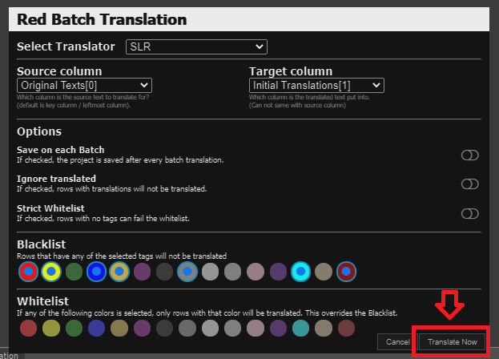
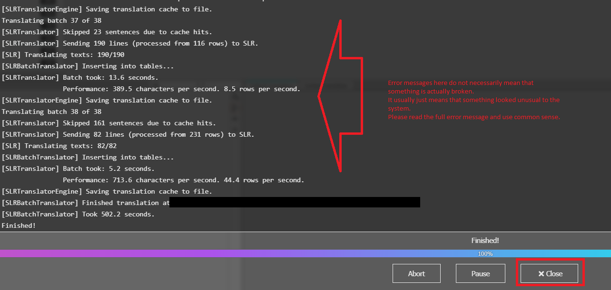

Batch translation runs the whole project (or a selected subset) through a translation engine automatically: rows are collected, packed into batches with regard for their color tags and dialogue scenes, sent to the engine, validated, written into the target column and post-checked. It is started from the Start Translation button in the main toolbar's translation group (between Glossary and Word Wrap). The button is labelled Start Translation rather than "Batch Translation", and the dialog it opens links straight to the engine options, so an unconfigured engine can be set up from there.
Running the full project through batch translation is the recommended default: requests are built scene-aware (see below), so the engine sees whole conversations — something line-by-line translating cannot provide. Review and fix individual rows afterwards.
Auto-Inject Glossary option appends it to every request automatically and keeps names consistent across the whole game.

| Setting | Meaning |
|---|---|
Select Translator |
Engine for this run — any registered engine, regardless of the default. Pre-selected with the project's engine, then the global default. |
Source column / Target column |
Which grid column holds the original text and which receives the translation (defaults: the key column and the first translation column). The two must differ. |
Save on each Batch |
Saves the project after every completed batch, so a crash costs at most one batch of work. |
Ignore translated |
Skips rows that already have any translation — safe re-run button for resuming interrupted work. |
Strict Whitelist |
With a whitelist active, untagged rows normally still pass; strict mode makes them fail too. |
Blacklist |
Rows carrying any selected color tag are not translated. Defaults exclude the skip-by-default tags (red, yellow, blue, gold, gray, aqua, darkred) — see Cell Color Tags. |
Whitelist |
If any colors are selected here, only rows with those tags are translated; this overrides the blacklist. |
Translate Now starts the run; Cancel (or Esc) closes the dialog without translating.
Ignore translated) have no translation yet.Max Concurrent Batches setting.For projects with a Scene Graph (all built-in RPG Maker engines: MV, MZ, XP, VX and VX Ace), the grouping is automatic on every run — there is no toggle. Rows are re-sorted into dialogue order and packed in four streams: big scenes are sent whole, small related scenes are grouped (same event or event page, common-event call links, callers, map-transfer continuity), single-line scenes are packed densely, and non-scene rows (menus, items, system terms) are batched last.
The size limits of the four streams are DSLR engine options — Maximum Scene Size, Target Request Size, Scene Threshold, Max Scenes per Grouped Batch, Max Rows per Non-Scene Batch, Max Rows per Single-Line Scene Batch — documented with their defaults on the Scene Graph page and in DSLR Translator. Projects without a Scene Graph (custom parsers, or RPG Maker projects imported without staged data) batch by tags and size limits only.

Processed X of Y batches) and an estimated time remaining computed from actual throughput; cache hits are excluded from the estimate so it does not turn overly optimistic.Pause holds the run until you acknowledge the dialog; Abort (after confirmation) stops it cleanly — everything translated so far stays in the grid.purple, and rows with processing problems get SHISAYE error codes written into a dedicated errors column. An alert tells you how to find each group: search for the tag purple with the Find dialog's Tag target (see Find & Replace and Cell Color Tags), or search for the text SHISAYE. When the DSLR Review Translations option is on, its semantic findings arrive as the separate mediumpurple tag (see Review Translations).- Modified with SLR Translator v<version> to the game title row (the window title shown by the game), so exports made with the tool are recognizable. An older watermark from a previous run is replaced, not duplicated; remove the suffix manually if you do not want it.Ignore translated off and only purple (or mediumpurple for the review's findings) selected in the Whitelist — exactly the flagged rows are sent through the engine again.Ctrl+G (see Editor Basics) or via Context Translation.Select Translator to the other engine for a retry run is a quick way to comparison-test.Save on each Batch for long unattended runs.